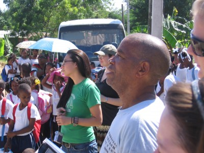
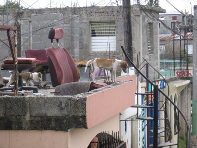
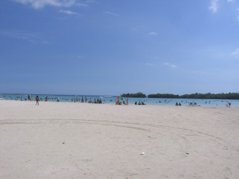

November 17th, 2007-I’ve got 9000 mosquito bites, probably have malaria, dengue and a few others but life is good in the Caribbean. I even heard its 32 degrees in Chicago and Detroit and I feel sooo bad for those unfortunate souls, if it makes you feel better it did rain today, but then it was 82 and we even had a full rainbow.I cut the last post short but the good news is I figured out with the help of some people how to minimize the pictures so now they are actually viewable to people sitting less than 500 feet from the computer. Good news for you, bad news for the people in the cubicle down the hall from you who used to be able to see all those giant photos.Does this photo look like a famous ESPN sportscaster with a certain lazy eye, or is it me?“OK Spot listen, everybody makes mistakes, your girlfriend and that labrador from down the block, it was just a fling, don’t do it man!”The kids here play baseball all the time every day, the places we go and work don’t have diamonds so they play in the streets using a broken broomstick as a bat and a bottle cap as a ball. They throw the bottle cap like a frisbee and it curves all over the place. These kids hit the bottle cap 9 out of 10 times. I tried it, and little Juan struck me out 7 times. All the kids gathered and watched and of course cheered like crazy every time I swung and missed.One morning two days ago, we got picked up by a man who was taking us to the Government office of Social Services to see if we could buy food directly from the govt. to bring out to the terribly poor neighborhoods near the Haiti border. This man drove like he either had no license, had his license revoked, or his wife was in labor at the Social Services office. He insisted in Spanish he had never been in an accident. I didn’t believe him. Greg, the guy I am learning from in this organization then tells us a story that one day he was driving like a maniac (suprise) and he crashed into an antique wooden car and destroyed part of the side of the car.Apparently, this car had taken years to build and was the only wooden car in the Dominican Republic. The kicker is that Greg is watching the news two weeks later after the ‘accident’ and there is a special feature on the car and how it is the only wooden car in the Dominican and it’s fully operational. The camera pans back and moves around the car until it gets to the other side where there is a giant DENT and the mirror is missing. We asked the driver about this story and all he did was let out a big chuckle.Yesterday we drove to Barahona on the way to the Haiti border. These communities were set up by the sugar cane companies to house Haitian workers and their families. ‘House’ would not be the correct word, you couldn’t call these houses, they were shacks, filled with mud and standing water. The flood water from Tropical Storm Noel had still not subsided and 13 days later, they still didn’t have power. The water had risen up to an average man’s chest and mattresses, clothes, were all ruined. Mud was everywhere and most roads through each community were impassable in our van.We delivered 400 bags of food to various communities, one going to each family. The bags consisted of rice, beans, sugar, flour, powdered milk and salt. For those that haven’t been to a third world country, the children always stand out. They love to see white people and as soon as your vehicle pulls up, it is immediately surrounded by children who want to be held. They don’t want our money, they just want us to hold them and play with them. Not once will they ever ask you for money. They did ask me for my empty apple juice bottle, which they took from me only after surrounding me and grabbing it.The kids are by far the best part about this experience. I’ve seen poverty in the past 12 days that most people in the U.S. never get to experience. I’ve seen enough poverty in my last trip to Mexico that it doesn’t really affect me as much as it used to in Mexico. But I love the kids. I love how they are always smiling and wanting to play. I am as interested in them as they are in me. The kids told me yesterday that they had never seen white (blonde) hair grow out of someone’s arms before and spent minutes pulling at it.We spent a good amount of time in the communities talking with various leaders, both religious and non, and even met a few other NGOs working in the communities. Now I am not one to bash other NGOs because we are few and far between and all in it together. Children of the Nations was there in communities with houses still filled with mud so deep you couldn’t walk through it. They were building a basketball court. That’s all. You all are smart people, take from that what you will. OXFAM, a huge non-profit specializing in fair-trade based out of London sent two big trucks over full of supplies and food to a woman named Connie working for a non-profit called COPA. Connie seemed like she had been in country forever and knew the communities left and right. She looked like she could be anyone’s grandma, white hair, pale white skin, wearing a visor and jeans pulled up real high. Now she’s been fighting the good fight for a long while, and I admire that.That night we slept in a house on the top of this hill that was owned by a friend of Greg’s. The house was beautiful and I slept on a balcony because it is so nice outside here at night. All night we heard shotgun blasts followed by handgun fire. The police and the gangs in these communities fight endlessly all night against one another. Some of the shots sounded dangerously close but we knew they were quite a few miles away and we are miles away from the communities. The third world is a land of lawlessness. Even on our ride out, we were driving through a police checkpoint and one of the officers flagged us to stop and pull over from his chair on the side of the road. Well, we didn’t stop and the officer didn’t chase. Even if he had chased, 200 pesos in his pocket later and we’d be home free.They call me Carlos here because no one can pronounce my first name because of the J sound, which doesn’t exist in the Spanish language. I did get to go to one beach last week, it’s nothing special, but its probably one more beach than all of you have been to in the past month. Sorry, that was low. I love all of my loyal readers, even if I have to continually pay some of you to visit the site. great success!Go Spartans, Pistons, and of course, Buckeyes.From the barrio known as Ensanche Quisaqueya,Backpacker Acker

|
You are using an insecure version of your web browser. Please update your browser!
Using an outdated browser makes your computer unsafe. For a safer, faster, more enjoyable user experience, please update your browser today or try a newer browser.
|
{kind=link}
{kind=link}
{kind=link}